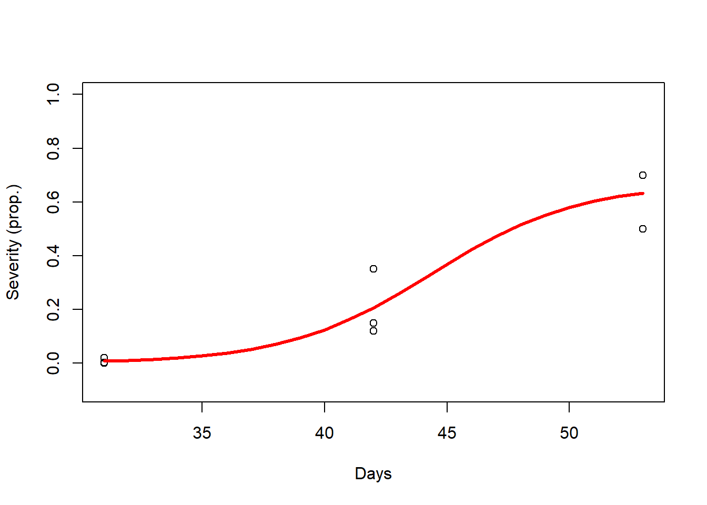

Welcome to Day 2!!
Yesterday we:
Discussed what is a linear model and what is not - Linear on the parameters.
We showed that linear models \(\neq\) lines.
We showed that linear models \(\neq\) simplicity.
Discussed different estimation approaches.
Loss function approach - Minimize the residual sum (distance between obs and pred.).
Likelihood-based approach - Maximize likelihood = Values of parameters that maximize the probability of the observed data under the model we assumed.
Bayesian approach - Prior knowledge + data = Values the parameter can assume with different probability - Whole distribution (posterior distribution).
Discussed briefly when they are equal (e.g., normal errors) and when they are not.
Nonlinear models
Outline:
Exercises from day 1
Linearization - Pros and cons
Mechanistic vs Phenomenological models
Identifiability of parameters
Working with non-identifiability
Fixing weakly identifiable parameters
Simplifying the model - Linearization
Summary
Practice questions
What is day 2 about?
When parameters matter, inference becomes fragile and every workaround has a cost.
1. Exercises from day 1
You were asked to work with this data:

What is it really about?

Two years/seasons: 2023 and 2024
Two varieties:
a -> Susceptible
b -> Moderately resistant
Your were asked to fit a linearized form of the logistic model for 2024 variety a
Code
# Data 2024 variety a
a_24 <- df_a[which(df_a$year == 2024),]
a_24$p_sev <- a_24$p_sev + 0.001
# Logit transformation
a_24$l_sev <- log(a_24$p_sev/(1-a_24$p_sev)) # Logit
# Fit the model
m1 <- lm(l_sev ~ time, data = a_24)
# Make predictions
m1_pred <- data.frame(
time = seq(min(a_24$time), max(a_24$time), by = 1)
)
m1_pred$pred <- predict(m1, newdata = m1_pred)
# Plot predictions
m1_pred$inv_logit <- 1/(1+exp(-m1_pred$pred))
plot(a_24$time, a_24$l_sev, ylab = "Logit(y)", xlab = "Days", ylim = c(-7, 5))
lines(m1_pred$time, m1_pred$pred, lwd = 3, col = "red")
Code

What is actually going on here?
Logit:
\[ logit(y) = log(\frac{y}{K-y}) \]
We have to assume a value for \(K\), “losing” this parameter.
Our intercept (\(\beta_0\)) it not as simple as before:
\[ \beta_0 = log(\frac{y_0}{K-y_0}) \]
We also “lose” \(y_0\).
We still have our slope \(\beta_1\), and we can use it to make inference about the disease growth, but it is not the same as \(r\).
\(\beta_1\):
Multiply \(x_i\) and is additive, each unit change in \(\mathbf{x}\) adds \(\beta_1\) to \(\mathbf{y}\).
Shifts the mean linearly.
Effect is independent on \(\mathbf{y}\) value. No bounds.
No direct biological meaning.
Easier to estimate with low correlation to \(\beta_0\).
\(r\)
Multiply \(x_i\), but is on an exponential, each unit change in \(\mathbf{x}\) is multiplicative in the growth (differential equation6).
Affects shape and trajectory of the entire curve.
Effect changes with \(\mathbf{y}\) value. Bounded between 0 and \(K\)
Direct biological meaning.
Estimation sensitive to information on the data, often correlated with \(K\).
The actual linearized model:
\[ log(\frac{y_i}{1 - y_i}) = log(\frac{y_0}{1 - y_0}) + \beta_1*x_i + \varepsilon_i \]
Pros: Simple to use; require less information from the data collected to fit.
Cons: No inference on important parameters such as \(K\) and \(y_0\); more complex to make sense of the response variable \(logit(severity)\); sensibility to extreme values (close to 0 or 100); \(\beta_1\) and \(r\) do not have the same meaning (\(\beta_1*x_i\) adds, while \(r*x_i\) is exponential).
Also, more assumptions = More bias!
To be discussed on day 3!
You were asked to fit two different models to this data, a logistic and a polynomial for both 2023 and 2024.
Mechanistic vs Phenomenological models - First, we will focus on these two models in 2024 for variety a:
Logistic model
Code
# Fit the model
m2 <- nls(p_sev ~ K/(1 + ((K-y0)/y0)*exp(-r*time)), data = a_24, start = list(K = 0.7, y0 = 0.001, r = 0.2))
# Make predictions
m2_pred <- data.frame(
time = seq(min(a_24$time), max(a_24$time), by = 1))
m2_pred$pred <- predict(m2, newdata = m2_pred)
# Plot predictions
plot(a_24$time, a_24$p_sev, ylab = "Severity (prop.)", xlab = "Days", ylim = c(-0.1, 1))
lines(m2_pred$time, m2_pred$pred, lwd = 3, col = "red")
Polynomial
Code
# Fit the model
m3 <- lm(p_sev ~ poly(time, degree = 3), data = a_24)
# Make predictions
m3_pred <- data.frame(
time = seq(min(a_24$time), max(a_24$time), by = 1))
m3_pred$pred <- predict(m3, newdata = m3_pred)
# Plot predictions
plot(a_24$time, a_24$p_sev, ylab = "Severity (prop.)", xlab = "Days", ylim = c(-0.1, 1))
lines(m3_pred$time, m3_pred$pred, lwd = 3, col = "red")
What is the difference visually? Why would we choose one or the other?
Board
What is the disease rate of growth?
## r
## 0.3339Identifiability of parameters - Now, we will focus on the logistic model for variety a in 2023 and 2024:
Here, we will add the following assumption:
\[ \varepsilon_i \sim i.i.d. N(0, \sigma^2) \]
This way we can get Wald confidence intervals7.
What is identifiability?
In general terms, when a parameter is weakly constrained ~ We are very uncertain about that parameter
Two types:
Structural: This is caused by the model structure
Practical: Caused by the data - Limited data lack information on a specific parameter
Board
What it is - Example
Why is it very important in nonlinear models
To understand what is causes, look at the parameters of our model for both years:

- High uncertainty around parameter estimates! - Classical symptom of weak identifiability
Another classical symptom is correlation between parameters. How does it look like for our models?
- 2023 correlation matrix
## K y0 r
## K 1.0000000 0.9761482 -0.9771736
## y0 0.9761482 1.0000000 -0.9999097
## r -0.9771736 -0.9999097 1.0000000- 2024 correlation matrix
## K y0 r
## K 1.0000000 0.6486111 -0.6869020
## y0 0.6486111 1.0000000 -0.9946642
## r -0.6869020 -0.9946642 1.0000000Why it happens?
The data inform combinations of parameters instead of individual parameters
It created dependencies - Dependencies between r and K.
2. Working with weakly identifiable parameters
What are our options?
Adjust the experimental design and/or data collection method
Collect more data associated with the weakly identified parameters
Reparametrize weakly identified parameters
- Simplify the model (e.g. fixing weakly identified parameters)
Impose constrains on these parameters using prior knowledge
A good paper about identifiability: Preston et al. 2025

Fixing weakly identifiable parameters
If our biggest interest concerns other parameters, we can fix weakly identified parameters. In this case, \(r\) is usually the parameter of greatest interest, once it tells how fast the epidemic progresses.
Let’s assume \(K = 1\):
\[ y_i = \frac{1}{1+(\frac{1 - y_0}{y_0})*e^{-rx_i + \varepsilon_i}} \]
Code
# Data variety a, 2023
a_23 <- df[which(df$var == "a" & df$year == 2023),]
# Fit the model
m4 <- nls(p_sev ~ 100/(1 + ((100-y0)/y0)*exp(-r*time)), data = a_23, start = list(y0 = 0.001, r = 0.2))
# Make predictions
m4_pred <- data.frame(
time = seq(min(a_23$time), max(a_23$time))
)
m4_pred$pred <- predict(m4, newdata = m4_pred)
# Plot predictions
plot(a_23$time, a_23$p_sev, ylab = "Severity (prop.)", xlab = "Days", ylim = c(-0.1, 1))
lines(m4_pred$time, m4_pred$pred, lwd = 3, col = 'red')
How it compares to estimating \(K\)?

How about the parameters?

Simplifying the model - Linearization
Recall:
Here we have to assume a value for \(K\) in order to use the logic transformation, therefore \(K = 1\).
Our response variable becomes logit(severity).
Code
# Trasnform the data with the logit transformation
a_23$l_sev <- a_23$p_sev/(1-a_23$p_sev)
# Fit the linear model
m6 <- lm(l_sev ~ time, data = a_23)
# Make predictions
m6_pred <- data.frame(
time = seq(min(a_23$time), max(a_23$time), by = 1)
)
m6_pred$pred <- predict(m6, newdata = m6_pred)
# Plot predictions
plot(a_23$time, a_23$l_sev, ylab = "Logit(y)", xlab = "Days", ylim = c(-1, 3))
lines(m6_pred$time, m6_pred$pred, lwd = 3, col = "red")
And extract or slope \(\beta_1\) and check uncertainty:
Code
## [1] "Estimate: 0.0855 Lower: 0.0451 Upper: 0.126"Contrast \(r\) and \(\beta_1\):
| Parameter | Estimate | L.CI | U.CI |
|---|---|---|---|
| b1 | 0.085519 | 0.045051 | 0.1259871 |
| r | 0.336100 | -1.098000 | 1.7702000 |
\(\beta_1\) is usually well identified with little data, in contrast to \(r\)
These parameters represent different things, as discussed above
\(\beta_1\) describes the change in \(\mathbf{y}\) with one unit change in \(\mathbf{x}\)
\(r\) describes how quickly the epidemic accelerates and approaches its upper bound
3. Summary
Today we discussed:
Linearization
Mechanistic vs Phenomenological models
Identifiability
What it is
How to work with it - Fixing parameters and simplification
Which models did we use?
- Logistic Disease Progress Curve (nonlinear, mechanistic):
\[ y_i = \frac{K}{1 + (\frac{K - y_0}{y_0})e^{-r*x_i + \varepsilon_i}} \]
- Logit-transformed linear model (linear, phenomenological):
\[ log(\frac{y_i}{1 - y_i}) = log(\frac{y_0}{1 - y_0}) + \beta_1*x_i + \varepsilon_i \]
Which assumption we made?
- For all models:
\[ \varepsilon_i \sim i.i.d. N(0, \sigma^2) \]
- For the linearized:
\[ K = 1 \\[10pt] \varepsilon_i \sim i.i.d. N(0, \sigma^2) \]
*nls function in R uses Least Squares, a loss function approach, but under the assumption that errors are independent and individually distributed, Likelihood approach = Loss function approach.
4. Practice questions
- Sample code is provided for some questions. Code used on the class examples can also be used to work on this practice.
I. For 2023, fit the nonlinear logistic model to variety a and b. Extract \(K\) and \(r\) and discuss the effect of genetic resistance in these parameters.
Code
# Let's fit the model for each variety individually
# Data
a_23 <- df[which(df$year == 2023 & df$var == "a"),]
b_23 <- df[which(df$year == 2023 & df$var == "b"),]
# Fit the models
ma <- nls(p_sev ~ K/(1+((K-y0)/y0)*exp(-r*time)), data = a_23, start = c(K = 0.7, y0 = 0.0001, r = 0.2))
mb <- nls(p_sev ~ K/(1+((K-y0)/y0)*exp(-r*time)), data = b_23, start = c(K = 0.7, y0 = 0.0001, r = 0.2))
# Make predictions
pred_df <- data.frame(
time = seq(min(a_23$time), max(a_23$time))
)
pred_df$pred_a <- predict(ma, newdata = pred_df)
pred_df$pred_b <- predict(mb, newdata = pred_df)
# Plot predictions
plot(a_23$time, a_23$p_sev, type = "p", col = "darkred", ylim = c(0, 1), ylab = "Severity (prop.)", xlab = "Days")
points(b_23$time, b_23$p_sev, col = "orange")
lines(pred_df$time, pred_df$pred_a, lwd = 3, col = 'red')
lines(pred_df$time, pred_df$pred_b, lwd = 3, col = 'gold')
# Extract parameters
## K
K_a <- coef(ma)[1]
K_a
K_b <- coef(mb)[1]
K_b
## r
r_a <- coef(ma)[3]
r_a
r_b <- coef(mb)[3]
r_bI.a. Write down the model you are using in I and which assumption you are making (fixation).
II. Repeat what you did in I, but assume \(K = 1\). Can you see differences?
Code
# Let's fit the model for each variety individually
# Data
a_23 <- df[which(df$year == 2023 & df$var == "a"),]
b_23 <- df[which(df$year == 2023 & df$var == "b"),]
# Fit the models
ma <- nls(p_sev ~ 1/(1+((1-y0)/y0)*exp(-r*time)), data = a_23, start = c(y0 = 0.0001, r = 0.2))
mb <- nls(p_sev ~ 1/(1+((1-y0)/y0)*exp(-r*time)), data = b_23, start = c(y0 = 0.0001, r = 0.2))
# Make predictions
pred_df <- data.frame(
time = seq(min(a_23$time), max(a_23$time))
)
pred_df$pred_a <- predict(ma, newdata = pred_df)
pred_df$pred_b <- predict(mb, newdata = pred_df)
# Plot predictions
plot(a_23$time, a_23$p_sev, type = "p", col = "darkred", ylim = c(0, 1), ylab = "Severity (prop.)", xlab = "Days")
points(b_23$time, b_23$p_sev, col = "orange")
lines(pred_df$time, pred_df$pred_a, lwd = 3, col = 'red')
lines(pred_df$time, pred_df$pred_b, lwd = 3, col = 'gold')
# Extract parameters
## r
r_a <- coef(ma)[2]
r_a
r_b <- coef(mb)[2]
r_bIII. Repeat what you did in I and II, but now, use the logit transformation on the data and a linear model. Compare the disease progress in varieties a and b.
Code
# Data
a_23 <- df[which(df$year == 2023 & df$var == "a"),]
a_23$l_sev <- a_23$p_sev/(1-a_23$p_sev)
b_23 <- df[which(df$year == 2023 & df$var == "b"),]
b_23$l_sev <- b_23$p_sev/(1-b_23$p_sev)
# Fit the models
ma <- lm(l_sev ~ time, data = a_23)
mb <- lm(l_sev ~ time, data = b_23)
# Make predictions
pred_df <- data.frame(
time = seq(min(a_23$time), max(a_23$time))
)
pred_df$pred_a <- predict(ma, newdata = pred_df)
pred_df$pred_b <- predict(mb, newdata = pred_df)
# Plot predictions
plot(a_23$time, a_23$l_sev, type = "p", col = "darkred", ylim = c(-0.3, 2), ylab = "Logit(y)", xlab = "Days")
points(b_23$time, b_23$l_sev, col = "orange")
lines(pred_df$time, pred_df$pred_a, lwd = 3, col = 'red')
lines(pred_df$time, pred_df$pred_b, lwd = 3, col = 'gold')
# Extract parameters
## b1
b1_a <- coef(ma)[2]
b1_a
b1_b <- coef(mb)[2]
b1_bIII.a. Write down the model you are using in I and which assumption you are making (fixation).
VI. Repeat question I for 2024.
\(\frac{dy}{dt} = \mathbf{ry}(1-\frac{\mathbf{y}}{\mathbf{K}})\)↩︎
Wald CI measure local uncertainty (around the parameter estimate) and not at the whole parameter space (all values it could assume - global), therefore, they might be more optimistic than global CI. Bootstrap or Bayesian approach would provide more closely a global uncertainty measure once they explore a broader region of the parameter space.↩︎